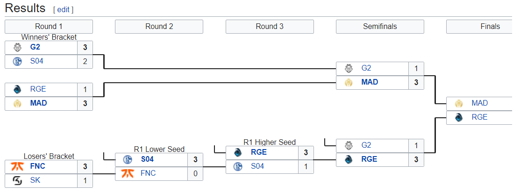

Primera final de LEC sin G2 o Fnatic, MAD Lions y Rogue hacen historia
Todas las eras llegan a su fin, aunque la de G2 Esports en League of Legends tenía pinta de que podía ser infinita, pero no lo es.
Este fin de semana ha ocurrido algo histórico en LEC, y es que, por primera vez desde que la LCS EU existe, ni Fnatic ni G2 Esports disputarán la final.
De hecho, serán Rogue y MAD Lions, dos equipos llamados a acabar con la dinastía de ambos conjuntos, los que levanten el trofeo de LEC por
primera vez en su historia, y uno de los dos logrará ir al MSI para representar a Europa también por primera vez en la región. G2 Esports, con 8 títulos,
y Fnatic, con 7, son los claros reyes de Europa, y solo Alliance fue capaz de robar un título europeo a ambos conjuntos en el verano de 2014. Desde entonces,
G2 y Fnatic se han repartido los títulos.
